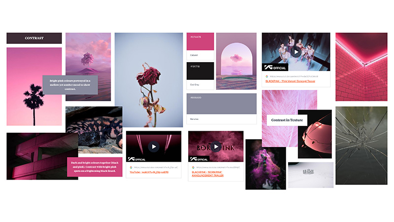
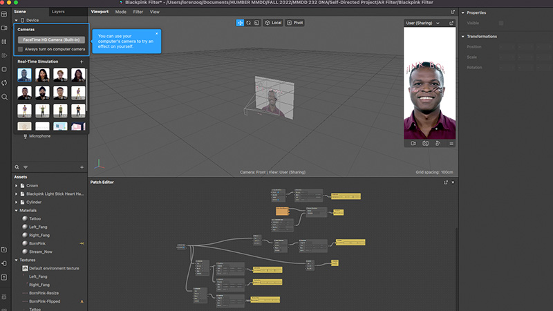
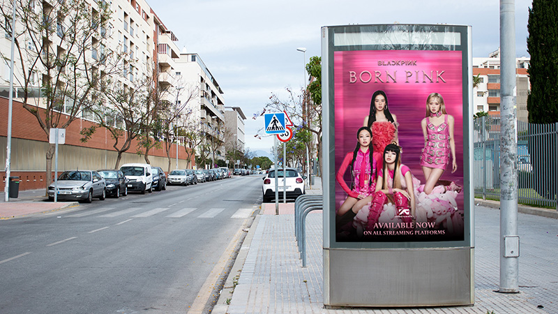
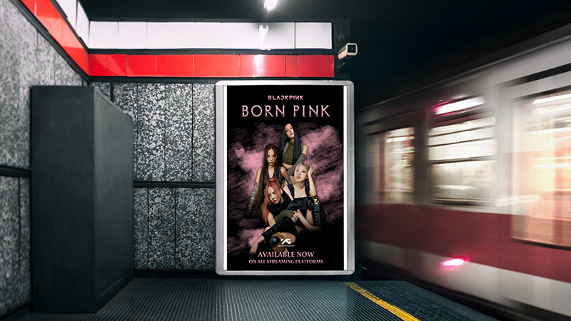
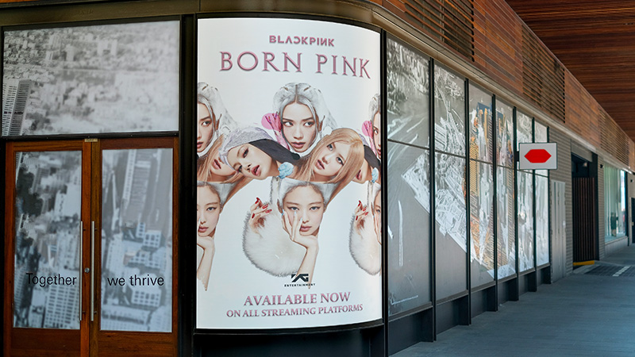

Creating a Multimedia Campaign: "Born Pink"

Project Type
- Multimedia Campaign
Role
- Art Director
- AR Experience Designer
- Video Editor
Duration
- Sep 2022 - Dec 2022
Team
- Lorenzo Queano - Art Director & Video Editor
Software
- Spark AR
- Adobe Photoshop
- Adobe Premiere Pro
Other Tools Used
- Miro
- SaveTube
- CloudConvert
For my Emerging Multimedia Practice course, we were tasked to create, plan and complete a self-directed project for the whole semester.
As an indecisive overthinker, you can imagine the anxiety I felt trying to brainstorm ideas on what to do. After consulting past student examples as well as ideas presented to us by our professor, I had a difficult time finding something that resonated with me. He stressed the importance of committing to a project that’s directly related to our own interests and that’s when I took a step back to think of what I like, what my strengths are and what I would love to learn.
Dancing and performing has been a passion of mine for a number of years now but I’ve mainly been a Kpop dance coverist. Learning choreography, filming dance videos and posting them on social media has been a huge hobby of mine since 2014. I’ve learned art through movement while also learning how to film and edit videos on my own before I entered the Multimedia Design & Development program at Humber College. It only made sense to do a self-directed project on something related to Kpop and content creation.
After a discussion with my professor about the timeline of the project and thinking about how much time I’ll need to manage, I streamlined my project to have four final deliverables: a still poster set, a moving billboard ad, a 9x16 social media ad & an interactive Instagram filter.
 Based on the project’s time frame and the fact that I didn’t have the opportunity to photograph the girls to get new pictures and material myself, I had to consult existing media. After some photo manipulation on Photoshop for my posters, it was time to experiment and learn how to create a face filter on Spark AR. I was initially really nervous with this part because I was not sure how well I would be able to learn it. Thankfully, Spark AR was a software I had the pleasure getting comfortable with for another one of my classes.
I also user tested the filter with my classmates, as well as with Kris during our progress meeting, to see what it needs work on. I realized the users only knew there was an effect because I had asked them to tap the screen. This made me realize I needed to add a screen tap prompt to activate the animation.
Final Deliverables
Poster Mockups
  Video Advertisements
Face Filters
Click here to use the filter on Instagram Click here to use the filter on Facebook/MessengerYou May Also Like


Let's create together!
I am currently seeking full time opportunities and I am always open to chat about anything multimedia design — from video production to UX/UI to social media.
Let's get connected!
lorenzo.queano@gmail.comLQ ©2023